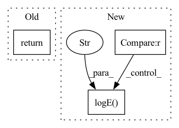

Pattern ID :26132
Before Change
def initCriterion(self):
if self.config.criterion:
LOG.logI("You configured criterion to {}".format(self.config.criterion))
return
self.config.criterion = torch.nn.CrossEntropyLoss()
LOG.logW("You should set config.criterion in config.py, unless CrossEntropyLoss() is exactly what you need")
def initCheckpoint(self):After Change
self.config.scaler = GradScaler()
def initCriterion(self):
if self.config.criterion is None :
LOG.logE("You should set config.train.criterion in config.py, e.g. config.train.criterion=torch.nn.CrossEntropyLoss()" ,exit=True)
LOG.logI("You set config.train.criterion to {}".format(self.config.criterion))
def initScheduler(self):
if self.config.scheduler is None:In pattern: SUPERPATTERN
Frequency: 3
Non-data size: 3
Instances Fragment ID: 78723185
Project Name: deepvac/deepvac
Commit Name: 56a3a36e3947a900a0f2c6e613a18b7a81453ba1
Time: 2021-05-13
Author: gemfield@civilnet.cn
File Name: deepvac/core/deepvac.py
M Class Name: DeepvacTrain
N Class Name: DeepvacTrain
M Method Name: initCriterion(1)
N Method Name: initCriterion(1)
M Parent Class: Deepvac
N Parent Class: Deepvac
M File Name: deepvac/core/deepvac.py
N File Name: deepvac/core/deepvac.py
M Start Line: 288
M End Line: 292
N Start Line: 349
N End Line: 351
Before Change
return False
if not self.config.static_quantize_dir:
return True
if self.core_config.is_forward_only and self.core_config.test_loader is None:
LOG.logE("You must set config.core.test_loader in config.py when config.core.static_quantize_dir is enabled.", exit=True)After Change
return False
if self.config.static_quantize_dir:
if self.deepvac_core_config.is_forward_only and self.deepvac_core_config.test_loader is None :
LOG.logE("You must set config.core.test_loader in config.py when static_quantize_dir is enabled in TEST." , exit=True)
if not self.deepvac_core_config.is_forward_only and self.deepvac_core_config.val_loader is None:
LOG.logE("You must set config.core.val_loader in config.py when static_quantize_dir is enabled in TRAIN.", exit=True)
return True
Fragment ID: 78723184
Project Name: deepvac/deepvac
Commit Name: ea248a449c23fd60cc58e3468799080cd12f0c76
Time: 2021-05-21
Author: gemfield@civilnet.cn
File Name: deepvac/cast/script.py
M Class Name: ScriptCast
N Class Name: ScriptCast
M Method Name: auditConfig(1)
N Method Name: auditConfig(1)
M Parent Class: DeepvacCast
N Parent Class: DeepvacCast
M File Name: deepvac/cast/script.py
N File Name: deepvac/cast/script.py
M Start Line: 12
M End Line: 20
N Start Line: 10
N End Line: 21
Before Change
return False
if not self.config.static_quantize_dir:
return True
if self.core_config.is_forward_only and self.core_config.test_loader is None:
LOG.logE("You must set config.core.test_loader in config.py when config.core.static_quantize_dir is enabled.", exit=True)After Change
return False
if self.config.static_quantize_dir:
if self.deepvac_core_config.is_forward_only and self.deepvac_core_config.test_loader is None :
LOG.logE("You must set config.core.test_loader in config.py when static_quantize_dir is enabled in TEST." , exit=True)
if not self.deepvac_core_config.is_forward_only and self.deepvac_core_config.val_loader is None:
LOG.logE("You must set config.core.val_loader in config.py when static_quantize_dir is enabled in TRAIN.", exit=True)
return True Fragment ID: 78723187
Project Name: deepvac/deepvac
Commit Name: ea248a449c23fd60cc58e3468799080cd12f0c76
Time: 2021-05-21
Author: gemfield@civilnet.cn
File Name: deepvac/cast/trace.py
M Class Name: TraceCast
N Class Name: TraceCast
M Method Name: auditConfig(1)
N Method Name: auditConfig(1)
M Parent Class: DeepvacCast
N Parent Class: DeepvacCast
M File Name: deepvac/cast/trace.py
N File Name: deepvac/cast/trace.py
M Start Line: 12
M End Line: 20
N Start Line: 10
N End Line: 22